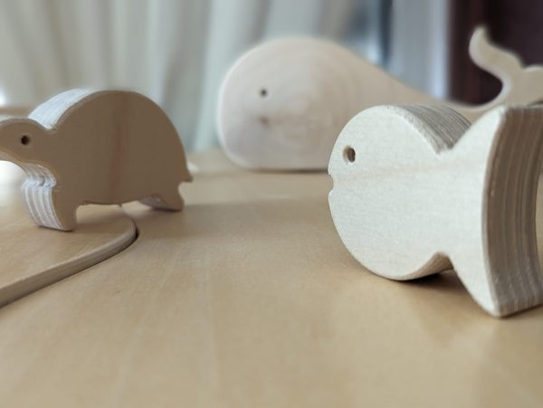

Kinder- und Jugendlichenpsychotherapeutin
Verhaltenstherapie
Herzlich willkommen! Ab August 2026 eröffne ich meine neue Praxis für Verhaltenstherapie für Kinder und Jugendliche in München und Umland. Mein Ziel ist es, junge Menschen in schwierigen Lebenssituationen professionell und einfühlsam zu begleiten und gemeinsam Lösungswege zu erarbeiten.
„May your choices reflect your hopes and not your fears.“
– Nelson Mandela
Psychotherapeutische Arbeit in München
Approbation Kinder- und Jugendlichenpsychotherapeutin in Verhaltenstherapie
Psychotherapeutische Behandlungen im Rahmen der KJP-Ausbildung
Pädagogische Arbeit mit geistig und körperlich schwer behinderten Kindern und Jugendlichen
Ausbildung zur Kinder- und Jugendlichenpsychotherapeutin in Verhaltenstherapie bei SIMKI e.V.
Master in 'Therapeutisch orientierter Sozialer Arbeit'
Pädagogische Fachkraft in einer Rehaklinik für Kinder und Jugendliche mit chronischen Erkrankungen
Studium der Erziehungswissenschaft
Behandlungsschwerpunkte in der Kinder- und Jugendlichenpsychotherapie

Elsässerstraße 34
81667 München
Schreiben Sie mir gerne eine Nachricht. Ich melde mich schnellstmöglich bei Ihnen.
Psychotherapie ist eine Behandlung von psychischen Erkrankungen mithilfe von wissenschaftlich anerkannten Verfahren, Methoden und Techniken.
Bitte bringen Sie beim ersten Termin immer Ihre Versichertenkarte mit.
Bei jüngeren Kindern und Jugendlichen bis zum 15./16. Lebensjahr finden ca. einmal im Monat Bezugspersonenstunden statt.